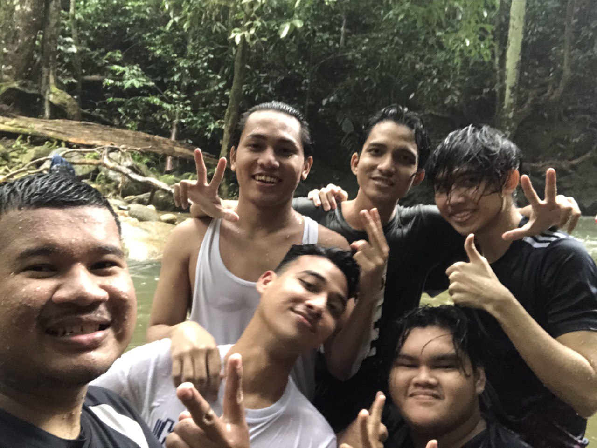
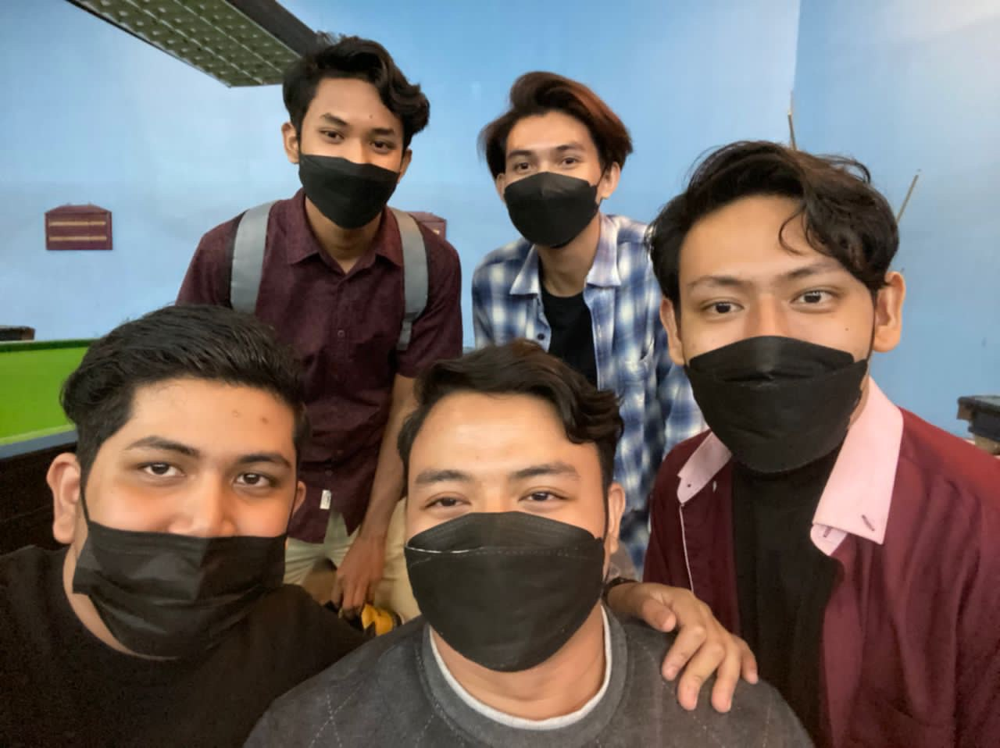

| Home | About Me | My Friend | My Family | My Hobby | My Education |
My Friend
Brotherhood

These are my friends that I have known since childhood. We became friends since we were 6 years old when we were in preschool. We also went to primary and secondary school in the same school. We spent a lot of time together when we were in school. At this point we have taken their respective paths, there are also some of them who have worked and furthered their studies at the University. We would get together and spend time when we had free time. Those in this picture are named Lokman, Adam, Faiz, Hakim, Luqman and me.

These are my friends when at University and now. We often go out to spend time together like bowling and watching movies. We are also housemates. We also often share each other’s stories and problems and always help each other. They helped me a lot in learning. The names of my friends are Isma, Syahmie, Aidil and Zarith.